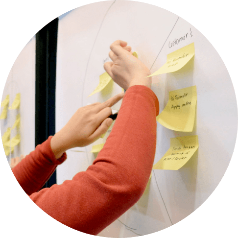
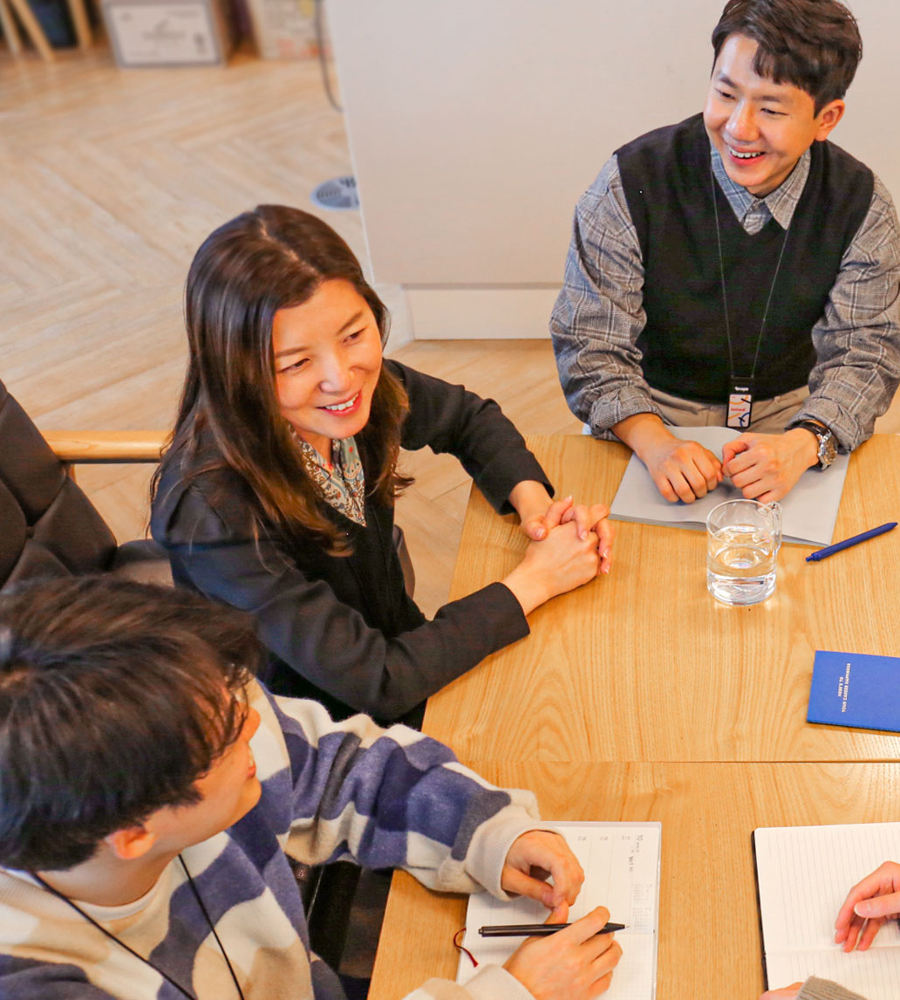
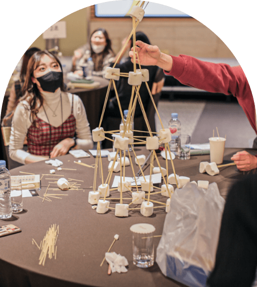
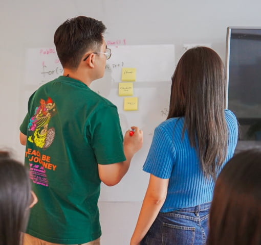

고객은 위블링 존재의 이유이자 출발점입니다.
우리가 하는 모든 일의 우선순위는 고객이어야 하며,
어떠한 작은 소리도 놓치지 않아야 합니다.
고객 덕후처럼 고객에게 귀 기울일 때 위블링만의
독보적인 아이덴티티를 유지할 수 있으며,
나아가 대체 불가한 서비스로 고객의 열광적 지지를 얻을 수 있습니다.


더 좋은 결과를 위해
건설적으로 비판하고
치열하게 토론합니다
위블링은 무조건 수긍하고 YES하는 직원은 원하지 않습니다.
상대와 의견이 늘 같을 수는 없습니다.
의견이 다르더라도 솔직하게 이야기할 수 있고,
이를 수용할 수 있어야 더 좋은 결과를 얻을 수 있다고 믿습니다.
특히 회의실에서만큼은 모두가 질문하고, 비판하고, 아이디어를 제안할 수 있어야 합니다.
위블링 회의 중 침묵은 절대 금이 아닙니다.
모두가 함께하는
팀 플레이를 지향합니다
위블링은 화려한 스타플레이어가 아닌 팀플레이어를 더 응원합니다.
위블링은 혼자일 때보다 함께일 때 더 빛이 나는 팀원이 필요합니다.
서로의 약점은 보완하고 혼자서는 절대 이루어낼 수 없는 탁월한
비즈니스 성과를 함께 이루어내기를 기대하기 때문입니다.


업무에 임하는 마인드
탁월함을 추구합니다
위블링은 탁월함을 추구합니다.
한 분야의 전문가가 되기 위해서는 끊임없는 학습과 스스로 정하는 높은 기준,
그리고 업무에 임하는 성숙한 마인드가 필수입니다.
그 분야의 전문가가 되어야만 빠르게 변하는 트렌드와 변화무쌍한
고객의 니즈에 탁월하게 대응해 갈 수 있습니다. 탁월함을 위한 지원은
위블링이 모두 해드리겠습니다.
창조적인 결과 창출
똑똑하게 실패합니다
위블링은 똑똑한 실패를 독려합니다.
똑똑한 실패는 철저한 준비와 계획이 존재하기에 실패 후,
인과관계와 실패의 근본적 원인을 명확히 파악할 수 있습니다.
실패의 학습을 통해 습득하게 되는 새로운 지식의 가치를 존중하며,
이 똑똑한 실패들이 켜켜이 쌓여 또 다른 창조적 성과를 창출할 것을 믿습니다.
또한 실패를 은폐하지 않고 빠르고 투명히 드러내어 리스크를 최소화한다면
더 큰 피해를 막을 수 있다고 생각합니다.